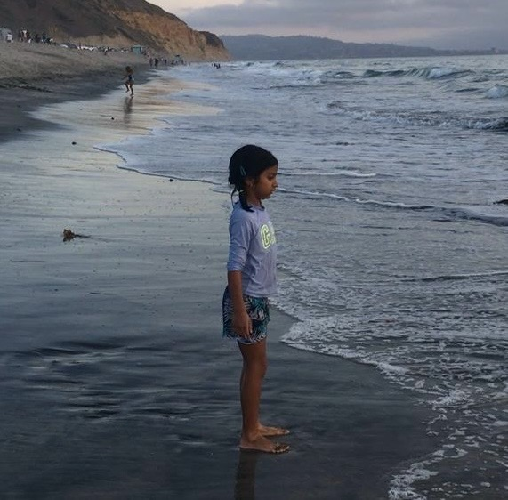

Esha Anand
yay!
Beginning
Since I was born, I loved to
move
. My greatest joys in life came from running far away from my parents, dancing randomly to music. There were other things I loved too: I loved reading about fantastical worlds, and being surrounded by books. I loved to be hands-on; I loved building complex structures of Lego blocks and Jenga and tearing them down. I loved astronomy, space, and the unknown worlds beyond our galaxy, but my love for movement has developed the most.
Reading
 As a child, I jumped from one passion to the next. My earliest dream at 5 years old was to be an
As a child, I jumped from one passion to the next. My earliest dream at 5 years old was to be an
astronomer
; to plan space missions, build rockets, and explore the depths of our universe. I loved space so much that I became known in my small elementary school for being such a space geek. In fourth grade, I suddenly decided that space was not it for me anymore — I wanted to be a spy. I spent hours researching how to join the CIA, solving puzzles, and reading as many mystery books as I could. Then the pandemic hit, and social media caused me to imagine a life where I was a freelance artist. When I returned to school in seventh grade, I felt confused by the amalgamation of my interests and had no idea where I would end up in life.
Dance
I had always been interested in dance. My mom was a
dancer
when she was younger, but education and moving to the U.S. forced her to tone down her interest. My grandmother and aunt were also heavily interested in dance, so it was natural for me to take it up. Being so interested in science meant I shunned art and dance for the first few years, but my interest in dance sparked during the pandemic, when I was forced to stay home so long with nothing to do but practice. I realized that dance was not just a foolish pursuit and that there were so many ways I could use it in my life. Though I never wanted to obsessively pursue it the same way I wanted to do other things as a child, dance has helped me understand myself and my various passions.